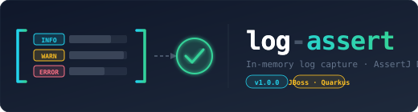

In-memory log capture with a fluent AssertJ-style DSL for JUnit 5. Built for Quarkus and any JBoss Log Manager environment.



In-memory log capture with a fluent AssertJ-style DSL for JUnit 5. Built for Quarkus and any JBoss Log Manager environment.
Filter by level, logger, message, or MDC. Chain assertions like you would with AssertJ collections.
Handles the JBoss Log Manager reset that breaks handler-based capture in @QuarkusTest.
No network I/O, no file writes, no process spawning. Safe to run in any CI environment.
Synchronized ring-buffer. Works with parallel Maven builds and concurrent Surefire execution.
<dependency> <groupId>io.github.usmanakram232</groupId> <artifactId>log-assert</artifactId> <version>1.0.0</version> <scope>test</scope> </dependency>
import static io.github.logassert.assertj.LogCaptorAssertions.assertThat; import io.github.logassert.core.LogCaptor; import io.github.logassert.junit5.*; @ExtendWith(LogCaptorExtension.class) class OrderServiceTest { @InjectLogCaptor LogCaptor logCaptor; @Test void payment_failure_is_logged() { orderService.processPayment(invalidRequest); assertThat(logCaptor) .atLevel(Level.ERROR) .fromLogger(OrderService.class) .single() .hasFormattedMessageContaining("Payment rejected") .hasThrowable(IllegalArgumentException.class); } }
Quarkus resets the log manager after the extension class is loaded.
Use @RegisterExtension static so the handler installs after that reset:
@QuarkusTest class PaymentResourceTest { @RegisterExtension // MUST be static static LogCaptorExtension logExt = LogCaptorExtension.create(); @InjectLogCaptor LogCaptor logCaptor; @Test void captures_payment_error() { assertThat(logCaptor).atLevel(Level.ERROR).isNotEmpty(); } }
atLevel(Level)Keep entries at exactly this levelatLevelAtLeast(Level)Keep entries at this level or higher severityfromLogger(Class<?>)Keep entries whose logger name starts with the class namefromLogger(String prefix)Keep entries whose logger name starts with prefixcontainingMessage(String)Keep entries whose formatted message contains the substringwithMdcEntry(String key, String value)Keep entries with a matching MDC context valuehasSize(int n)Assert exactly n entries (failure includes full entry list)isEmpty()Assert no entries capturedisNotEmpty()Assert at least one entry capturedsingle()Assert exactly one entry → LogEntryAssertfirst()Assert ≥1 entry → LogEntryAssert for firstlast()Assert ≥1 entry → LogEntryAssert for lasthasFormattedMessage(String)Exact message matchhasFormattedMessageContaining(String)Partial message matchhasFormattedMessageMatching(Pattern)Regex match (find, not matches)hasLevel(Level)Exact level assertionhasLoggerName(String)Exact logger name assertionhasMdcEntry(String key, String value)MDC key/value at log timehasThrowable(Class<?>)Throwable type assertionhasThrowableWithMessage(String)Exact throwable message matchhasThrowableWithMessageContaining(String)Partial throwable message matchhasNoThrowable()Assert no throwable was attached@InjectLogCaptorField injection of LogCaptor; cleared before each test@EchoLogs(minimumLevel)Re-enable console output for a test scope@FailOnUncheckedErrorFail if any ERROR entries remain after the test (when test passed)@PrintLogsOnFailureDump captured logs to stderr when a test fails| Dependency | Minimum | Tested with |
|---|---|---|
| Java | 21 | 21 |
| JUnit 5 (junit-jupiter) | 5.10 | 5.11.3 |
| AssertJ | 3.24 | 3.27.7 |
| JBoss Log Manager | 3.0 | 3.0.6.Final |
| SLF4J | 2.0 | 2.0.16 |
| Quarkus (optional) | 3.0 | 3.17.7 |